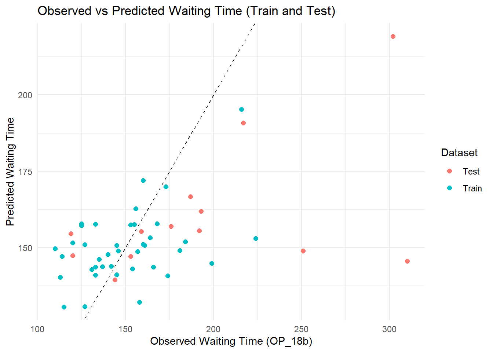

In this exercise, I am working on TidyTuesday dataset (April 8th 2025). The dataset is about “Timely and Effective Care” in the United States from Centers for Medicare & Medicaid Services. The data was curated by Jon Harmon from Data Science Learning Community. The dataset contains several variables including state, condition, ID, name, score, footnote, and date of admission.
state (character): The two-letter code for the state (or territory, etc) where the hospital is located.
condition (character): The condition for which the patient was admitted. Six categories of conditions are included in the data.
measure_id (character): The ID of the thing being measured. Note that there are 22 unique IDs but only 21 unique names.
measure_name (character): The name of the thing being measured. Note that there are 22 unique IDs but only 21 unique names.
score (character): The score of the measure.
footnote (character): Footnotes that apply to this measure: 5 = “Results are not available for this reporting period.”, 25 = “State and national averages include Veterans Health Administration (VHA) hospital data.”, 26 = “State and national averages include Department of Defense (DoD) hospital data.”.
start_date (date): The date on which measurement began for this measure.
end_date (date): The date on which measurement ended for this measure
Loading Packages
#install.packages("tidyverse")library(tidyverse)
Warning: package 'tibble' was built under R version 4.4.3
Warning: package 'tidyr' was built under R version 4.4.3
Warning: package 'readr' was built under R version 4.4.3
Warning: package 'purrr' was built under R version 4.4.3
Warning: package 'dplyr' was built under R version 4.4.3
Warning: package 'forcats' was built under R version 4.4.3
── Attaching core tidyverse packages ──────────────────────── tidyverse 2.0.0 ──
✔ dplyr 1.1.4 ✔ readr 2.1.5
✔ forcats 1.0.0 ✔ stringr 1.5.1
✔ ggplot2 3.5.2 ✔ tibble 3.2.1
✔ lubridate 1.9.4 ✔ tidyr 1.3.1
✔ purrr 1.0.4
── Conflicts ────────────────────────────────────────── tidyverse_conflicts() ──
✖ dplyr::filter() masks stats::filter()
✖ dplyr::lag() masks stats::lag()
ℹ Use the conflicted package (<http://conflicted.r-lib.org/>) to force all conflicts to become errors
Warning: package 'car' was built under R version 4.4.3
Loading required package: carData
Attaching package: 'car'
The following object is masked from 'package:dplyr':
recode
The following object is masked from 'package:purrr':
some
#Data sources
Dataset is downloaded from (https://data.cms.gov/provider-data/dataset/apyc-v239). Information regarding the dataset is obtained from tidytuesday github for the weekly data (April 8th 2025)
#Importing the downloaded CSVcare <-read_csv(here("tidytuesday-exercise", "data", "care_state.csv"))
Rows: 1232 Columns: 8
── Column specification ────────────────────────────────────────────────────────
Delimiter: ","
chr (5): state, condition, measure_id, measure_name, footnote
dbl (1): score
date (2): start_date, end_date
ℹ Use `spec()` to retrieve the full column specification for this data.
ℹ Specify the column types or set `show_col_types = FALSE` to quiet this message.
#check the structure of the datasetstr(care)
spc_tbl_ [1,232 × 8] (S3: spec_tbl_df/tbl_df/tbl/data.frame)
$ state : chr [1:1232] "AK" "AK" "AK" "AK" ...
$ condition : chr [1:1232] "Healthcare Personnel Vaccination" "Healthcare Personnel Vaccination" "Emergency Department" "Emergency Department" ...
$ measure_id : chr [1:1232] "HCP_COVID_19" "IMM_3" "OP_18b" "OP_18b_HIGH_MIN" ...
$ measure_name: chr [1:1232] "Percentage of healthcare personnel who are up to date with COVID-19 vaccinations" "Healthcare workers given influenza vaccination Higher percentages are better" "Average (median) time patients spent in the emergency department before leaving from the visit A lower number o"| __truncated__ "Average time patients spent in the emergency department before being sent home A lower number of minutes is better (high)" ...
$ score : num [1:1232] 7.3 80 140 157 136 136 NA 196 230 182 ...
$ footnote : chr [1:1232] NA NA "25, 26" "25, 26" ...
$ start_date : Date[1:1232], format: "2024-01-01" "2023-10-01" ...
$ end_date : Date[1:1232], format: "2024-03-31" "2024-03-31" ...
- attr(*, "spec")=
.. cols(
.. state = col_character(),
.. condition = col_character(),
.. measure_id = col_character(),
.. measure_name = col_character(),
.. score = col_double(),
.. footnote = col_character(),
.. start_date = col_date(format = ""),
.. end_date = col_date(format = "")
.. )
- attr(*, "problems")=<externalptr>
Let’s see the data summry using skim()
skim(care) # this is the smart version of summary()
Data summary
Name
care
Number of rows
1232
Number of columns
8
_______________________
Column type frequency:
character
5
Date
2
numeric
1
________________________
Group variables
None
Variable type: character
skim_variable
n_missing
complete_rate
min
max
empty
n_unique
whitespace
state
0
1.00
2
2
0
56
0
condition
0
1.00
11
35
0
6
0
measure_id
0
1.00
5
20
0
22
0
measure_name
0
1.00
26
172
0
21
0
footnote
168
0.86
1
6
0
3
0
Variable type: Date
skim_variable
n_missing
complete_rate
min
max
median
n_unique
start_date
0
1
2023-01-01
2024-01-01
2023-04-01
4
end_date
0
1
2023-12-31
2024-03-31
2024-03-31
2
Variable type: numeric
skim_variable
n_missing
complete_rate
mean
sd
p0
p25
p50
p75
p100
hist
score
155
0.87
134.04
102.02
1
70
93
193
730
▇▃▁▁▁
#Data Exploration
Explore each variable
In this step, I would like to explore each variables to understand more the data distribution and pattern
state
table(care$state)
AK AL AR AS AZ CA CO CT DC DE FL GA GU HI IA ID IL IN KS KY LA MA MD ME MI MN
22 22 22 22 22 22 22 22 22 22 22 22 22 22 22 22 22 22 22 22 22 22 22 22 22 22
MO MP MS MT NC ND NE NH NJ NM NV NY OH OK OR PA PR RI SC SD TN TX UT VA VI VT
22 22 22 22 22 22 22 22 22 22 22 22 22 22 22 22 22 22 22 22 22 22 22 22 22 22
WA WI WV WY
22 22 22 22
All state has same number of entries (22 entries)
condition
# 1. Summarize the condition countscondition_counts <- care %>%count(condition, sort =TRUE)# 2. Create a nice tablecondition_counts %>%gt() %>%tab_header(title ="Condition Frequencies",subtitle ="Timely and Effective Care Data" ) %>%cols_label(condition ="Condition",n ="Count" ) %>%fmt_number(columns =c(n),decimals =0 ) %>%opt_table_font(font =list(google_font("Roboto"), default_fonts() ) ) %>%tab_style(style =cell_text(weight ="bold"),locations =cells_column_labels(everything()) )
Condition Frequencies
Timely and Effective Care Data
Condition
Count
Emergency Department
672
Sepsis Care
280
Healthcare Personnel Vaccination
112
Cataract surgery outcome
56
Colonoscopy care
56
Electronic Clinical Quality Measure
56
Score of the measure
Distribution of care score
ggplot(care, aes(x = score)) +geom_density(fill ="lightgreen", color ="black") +labs(title ="Distribution of Care Scores",x ="Score",y ="Count" ) +theme_minimal()
Warning: Removed 155 rows containing non-finite outside the scale range
(`stat_density()`).
I want to explore the score of each measure
ggplot(care, aes(x = score, fill = measure_id)) +geom_histogram(color ="white", bins =30) +# white borders between barsfacet_wrap(vars(measure_id), scales ="free") +# free scales if measures vary a lotlabs(title ="Distribution of Score by Measure",x ="Score",y ="Count") +theme_minimal() +theme(legend.position ="none")
Warning: Removed 155 rows containing non-finite outside the scale range
(`stat_bin()`).
Now I want to explore the average score of each condition.
# 1. Summarize the average score by conditionavg_score_condition <- care %>%group_by(condition) %>%summarise(avg_score =mean(score, na.rm =TRUE)) %>%arrange(desc(avg_score))# 2. Plotggplot(avg_score_condition, aes(x =reorder(condition, avg_score), y = avg_score, fill = condition)) +geom_col() +# bar plotcoord_flip() +labs(title ="Average Score by Condition",x ="Condition",y ="Average Score") +theme_minimal() +theme(legend.position ="none")
state_score_avg <- care%>%group_by(state) %>%summarise(avg_score =mean(score, na.rm =TRUE))# Plot the mapplot_usmap(data = state_score_avg, values ="avg_score", color ="white") +scale_fill_continuous(low ="lightgreen", high ="darkgreen", name ="Avg Score", label = scales::comma ) +labs(title ="Average Care Score by State" ) +theme(legend.position ="right")
Now I want to see the average waiting time in emergency room by state.
# 1. Filter Emergency Department measurescare_emergency <- care %>%filter( condition =="Emergency Department",grepl("Average time patients spent", measure_name, ignore.case =TRUE) )# 2. Calculate average score (visit time) for each statestate_avg_emergency <- care_emergency %>%group_by(state) %>%summarise(avg_score =mean(score, na.rm =TRUE))# 3. Get the map pointsstate_map_points <- usmap::us_map(regions ="states")# 4. Convert to sf manuallystate_map_sf <- sf::st_as_sf(state_map_points, wkt ="geom", crs =4326)# 5. Extract centroid coordinatesstate_centroids <- state_map_sf %>% sf::st_centroid() %>% sf::st_coordinates() %>%as.data.frame()
Warning: st_centroid assumes attributes are constant over geometries
# 6. Build center datasetstate_centers <-tibble(state = state_map_sf$abbr,x = state_centroids$X,y = state_centroids$Y)# 7. Merge centers with average scoresstate_avg_emergency_labels <-left_join(state_avg_emergency, state_centers, by ="state")# 8. onvert score into hoursstate_avg_emergency_labels <- state_avg_emergency_labels %>%mutate(avg_hours =round(avg_score /60, 1) # divide by 60 and round to 1 decimal )# 9. Plot the map (now label with hours)plot_usmap(data = state_avg_emergency, values ="avg_score", color ="white") +geom_text(data = state_avg_emergency_labels, aes(x = x, y = y, label = avg_hours), # <-- use avg_hours instead of avg_scoreinherit.aes =FALSE, size =2.8, color ="black" ) +scale_fill_gradient(low ="mistyrose", high ="darkred", name ="Avg ER Visit Time (minutes)", label = scales::comma ) +labs(title ="Average Emergency Room waiting Time by State (in Hours)" ) +theme_minimal() +theme(legend.position ="bottom")
Warning: Removed 5 rows containing missing values or values outside the scale range
(`geom_text()`).
###Explore missing values
Before doing further analysis, I want to explore the missing value
gg_miss_var(care)+labs(title ="Number missing values for each variable")
Now I want to explore missing value for each variable by measurement.
gg_miss_var(care, facet = measure_id) +labs(title ="Number missing values for each variable by each measure_id")
Data Wrangling
In this step, I will create a new dataset, which only contain variables needed to answer may research question. In the new dataset, I will convert dataset from long format into wide format. It will make me easy to perform data analysis. The columns are variables, and rows are states of USA. I will drop some variables and delete missing values.
# Load required packageslibrary(tidyverse)# 1. Filter the dataset to only include the variables you wantcare_selected <- care %>%filter(measure_id %in%c("HCP_COVID_19", # COVID-19 vaccination"IMM_3", # Influenza vaccination"OP_18b", # ED waiting time"OP_23", # Stroke ED brain scan time"SAFE_USE_OF_OPIOIDS", # Safe opioid prescribing"SEP_1"# Sepsis care quality )) %>%select(state, measure_id, score)# 2. Pivot to wide formatcare_final <- care_selected %>%pivot_wider(names_from = measure_id,values_from = score )# 3. Check the resulting datasetglimpse(care_final)
# A tibble: 6 × 7
state HCP_COVID_19 IMM_3 OP_18b OP_23 SAFE_USE_OF_OPIOIDS SEP_1
<chr> <dbl> <dbl> <dbl> <dbl> <dbl> <dbl>
1 AK 7.3 80 140 60 16 58
2 AL 5.9 76 145 67 14 61
3 AR 2.7 81 133 72 16 64
4 AS NA NA NA NA NA NA
5 AZ 17.4 85 168 68 11 55
6 CA 22.4 73 184 73 14 67
Before going further, I want to explore the score distribution of my primary outcome.
care_final %>%ggplot(aes(x = OP_18b)) +geom_histogram(aes(y = ..density..), bins =30, fill ="skyblue", color ="white", alpha =0.7) +geom_density(color ="darkblue", size =1) +labs(title ="Distribution of Emergency Department Waiting Time (OP_18b)",x ="Median ED Waiting Time (Minutes)",y ="Density" ) +theme_minimal()
Warning: Using `size` aesthetic for lines was deprecated in ggplot2 3.4.0.
ℹ Please use `linewidth` instead.
Warning: The dot-dot notation (`..density..`) was deprecated in ggplot2 3.4.0.
ℹ Please use `after_stat(density)` instead.
Note: The score show moderate right-skeewed. It needs to be transformed in the model for better result
Research Questions
Timely access to emergency department (ED) care is essential for reducing patient morbidity and mortality. However, many hospitals across the United States continue to face challenges related to ED overcrowding and extended waiting times. Maintaining a healthy healthcare workforce is critical to ensuring efficient emergency care delivery. Vaccination coverage among healthcare personnel—specifically for COVID-19 and influenza—has been prioritized as a public health measure to reduce workforce illness and absenteeism. Higher rates of staff vaccination may improve hospital operations by preserving adequate staffing levels and maintaining patient flow, particularly in high-pressure environments such as emergency departments. Despite its importance, the relationship between healthcare personnel vaccination rates and operational outcomes like ED waiting times has not been extensively studied at a population level. Understanding whether improved vaccine coverage translates into more efficient emergency care could inform future workforce and infection control policies.
This exercise examines whether higher COVID-19 and influenza vaccination rates among healthcare workers are associated with shorter emergency department waiting times across U.S. states. Using standardized national measures, including healthcare worker vaccination rates and median ED visit times. This research evaluates potential associations between workforce health protection and patient access to timely care. In addition, hospital-level quality indicators such as safe opioid prescribing practices and sepsis care bundle compliance are included to account for broader institutional quality, ensuring a more accurate interpretation of the findings. By focusing on these key factors, this study seeks to provide evidence on whether strengthening healthcare personnel vaccination efforts could yield operational benefits beyond infection prevention, ultimately improving patient experience and emergency care system performance.
RQ: Is higher COVID-19 and influenza vaccination score among healthcare personnel associated with shorter emergency department (ED) waiting times across U.S. states?
Hypotheses: Higher healthcare personnel vaccination score (COVID-19 and influenza) is associated with shorter emergency department waiting times across U.S. states.
Modeling
##Initial Analysis In this initial analysis, I will perform linear model to see if the primary outome needs to be transformed, and to test multicolinearity.
The is no multicolinearity. Thi is good to go to the next step.
Now I want to see the residual to see if the original data can be performedr transfomation is needed.
par(mfrow =c(2, 2)) # Arrange 4 plots in 1 windowplot(model1)
The residuals look mostly scattered randomly, but there’s a small curve (slight nonlinearity).
Normal Q-Q plot shows Most points lie close to the diagonal line.
Diagnostic plots showed that model residuals were approximately normally distributed with no strong evidence of nonlinearity, heteroscedasticity, or influential outliers, supporting the appropriateness of linear regression modeling for this dataset.
par(mfrow =c(2, 2)) # Arrange 4 plots in 1 windowplot(model1_log)
There is no much change after using log transformation. Therefore, I will use without log transformation in my model.
##Futher Analysis
In this exercise, I will use three different model, Multiple Linear Regression, LASSO Regression, and Random Forest. The outcome variable is median of waiting time in emergency department (OP_18b). The predictors include Percentage of healthcare personnel who are up to date with COVID-19 vaccinations (HCP_COVID_19), Healthcare workers given influenza vaccination Higher percentages are better (IMM_3), Safe Use of Opioids - Concurrent Prescribing (SAFE_USE_OF_OPIOIDS), Percentage of patients who came to the emergency department with stroke symptoms who received brain scan results within 45 minutes of arrival (OP_23), and Percentage of patients who received appropriate care for severe sepsis and septic shock (SEP_1).
Linear Regression Model
First of all, multiple linear regression is fitted.
set.seed(seed)# Define a linear model with all predictorscare_lm <-linear_reg() %>%set_engine("lm") %>%set_mode("regression")# work flow care_lm_wf <-workflow() %>%add_model(care_lm) %>%add_formula(OP_18b ~ HCP_COVID_19 + IMM_3 + SAFE_USE_OF_OPIOIDS + OP_23 + SEP_1)# Set up cross-validation (15-fold CV)care_lm_cv_results <-fit_resamples( care_lm_wf,resamples =vfold_cv(care_train, v =15),metrics =metric_set(rmse, rsq),control =control_resamples(save_pred =TRUE))#Print result collect_metrics(care_lm_cv_results)
# A tibble: 2 × 6
.metric .estimator mean n std_err .config
<chr> <chr> <dbl> <int> <dbl> <chr>
1 rmse standard 24.8 15 3.54 Preprocessor1_Model1
2 rsq standard 0.582 15 0.104 Preprocessor1_Model1
Now I want to fit into all training data
# Fit model on the training datacare_lm_train <- care_lm_wf %>%fit(care_train)# Compute predictions on training datacare_lm_preds <-predict(care_lm_train, care_train) %>%bind_cols(care_train)
# Plot observed vs. predictedggplot(care_lm_preds, aes(x = OP_18b, y = .pred)) +geom_point(color ="purple", alpha =0.6) +geom_abline(slope =1, intercept =0, linetype ="dashed", color ="black") +labs(title ="Observed vs. Predicted Values - Linear Regression",x ="Observed",y ="Predicted") +theme_minimal()
The multiple linear regression model reasonably captures the general trend between predictors and ED waiting time across states; however, there is evidence of underestimation, particularly at higher observed values, suggesting some model misspecification or nonlinearity not captured.
set.seed(seed)# Set up the tuning gridrf_grid <-grid_regular(mtry(range =c(1, 10)), # mtry between 1 and 10min_n(range =c(1, 16)), # min_n between 1 and 16levels =4# 4 levels for each parameter)# Define the model specification using the ranger engine, with fixed trees at 300rf_cv <-rand_forest(mode ="regression",mtry =tune(), min_n =tune(), trees =300) %>%set_engine("ranger", seed = seed, importance ="impurity") # Create a workflowrf_wf_cv <-workflow() %>%add_model(rf_cv) %>%add_formula(OP_18b ~ HCP_COVID_19 + IMM_3 + SAFE_USE_OF_OPIOIDS + OP_23 + SEP_1)set.seed(seed)# Perform tuning with tune_grid()rf_tune_results_cv <-tune_grid( rf_wf_cv,resamples =vfold_cv(care_train, v =15, repeats =15),grid = rf_grid,metrics =metric_set(rmse),control =control_grid(save_pred =TRUE) )
Warning: package 'ranger' was built under R version 4.4.3
→ A | warning: ! 7 columns were requested but there were 5 predictors in the data.
ℹ 5 predictors will be used.
There were issues with some computations A: x1
→ B | warning: ! 10 columns were requested but there were 5 predictors in the data.
ℹ 5 predictors will be used.
There were issues with some computations A: x1
There were issues with some computations A: x2 B: x1
There were issues with some computations A: x9 B: x8
There were issues with some computations A: x16 B: x16
There were issues with some computations A: x27 B: x27
There were issues with some computations A: x39 B: x38
There were issues with some computations A: x50 B: x50
There were issues with some computations A: x62 B: x61
There were issues with some computations A: x73 B: x73
There were issues with some computations A: x85 B: x84
There were issues with some computations A: x96 B: x95
There were issues with some computations A: x107 B: x107
There were issues with some computations A: x119 B: x118
There were issues with some computations A: x130 B: x130
There were issues with some computations A: x142 B: x141
There were issues with some computations A: x153 B: x152
There were issues with some computations A: x164 B: x164
There were issues with some computations A: x176 B: x175
There were issues with some computations A: x187 B: x186
There were issues with some computations A: x198 B: x198
There were issues with some computations A: x210 B: x209
There were issues with some computations A: x220 B: x219
There were issues with some computations A: x231 B: x230
There were issues with some computations A: x242 B: x241
There were issues with some computations A: x253 B: x253
There were issues with some computations A: x265 B: x264
There were issues with some computations A: x276 B: x276
There were issues with some computations A: x287 B: x287
There were issues with some computations A: x299 B: x298
There were issues with some computations A: x310 B: x309
There were issues with some computations A: x321 B: x321
There were issues with some computations A: x333 B: x332
There were issues with some computations A: x344 B: x343
There were issues with some computations A: x355 B: x355
There were issues with some computations A: x367 B: x366
There were issues with some computations A: x378 B: x377
There were issues with some computations A: x389 B: x389
There were issues with some computations A: x401 B: x400
There were issues with some computations A: x412 B: x411
There were issues with some computations A: x423 B: x423
There were issues with some computations A: x434 B: x433
There were issues with some computations A: x444 B: x443
There were issues with some computations A: x455 B: x454
There were issues with some computations A: x466 B: x466
There were issues with some computations A: x478 B: x477
There were issues with some computations A: x489 B: x489
There were issues with some computations A: x501 B: x500
There were issues with some computations A: x512 B: x511
There were issues with some computations A: x523 B: x523
There were issues with some computations A: x535 B: x534
There were issues with some computations A: x546 B: x545
There were issues with some computations A: x557 B: x557
There were issues with some computations A: x569 B: x568
There were issues with some computations A: x580 B: x579
There were issues with some computations A: x591 B: x591
There were issues with some computations A: x603 B: x602
There were issues with some computations A: x614 B: x613
There were issues with some computations A: x625 B: x625
There were issues with some computations A: x637 B: x636
There were issues with some computations A: x647 B: x647
There were issues with some computations A: x659 B: x658
There were issues with some computations A: x669 B: x668
There were issues with some computations A: x680 B: x679
There were issues with some computations A: x691 B: x691
There were issues with some computations A: x703 B: x702
There were issues with some computations A: x714 B: x713
There were issues with some computations A: x725 B: x725
There were issues with some computations A: x737 B: x736
There were issues with some computations A: x748 B: x747
There were issues with some computations A: x759 B: x759
There were issues with some computations A: x771 B: x770
There were issues with some computations A: x782 B: x781
There were issues with some computations A: x793 B: x792
There were issues with some computations A: x804 B: x804
There were issues with some computations A: x811 B: x810
There were issues with some computations A: x817 B: x816
There were issues with some computations A: x823 B: x822
There were issues with some computations A: x830 B: x829
There were issues with some computations A: x837 B: x836
There were issues with some computations A: x843 B: x842
There were issues with some computations A: x847 B: x847
There were issues with some computations A: x851 B: x850
There were issues with some computations A: x855 B: x854
There were issues with some computations A: x858 B: x857
There were issues with some computations A: x862 B: x862
There were issues with some computations A: x867 B: x866
There were issues with some computations A: x872 B: x872
There were issues with some computations A: x877 B: x876
There were issues with some computations A: x881 B: x880
There were issues with some computations A: x885 B: x884
There were issues with some computations A: x888 B: x887
There were issues with some computations A: x892 B: x891
There were issues with some computations A: x900 B: x899
There were issues with some computations A: x900 B: x900
best_rf_params <- rf_tune_results_cv %>%select_best(metric ="rmse")rf_wf_final <-finalize_workflow(rf_wf_cv, best_rf_params)# Fit the final random forest model on the training datasetrf_model_final <-fit(rf_wf_final, data = care_train)# Generate predictions on the training set and combine them with the actual outcomesrf_preds <-predict(rf_model_final, care_train) %>%bind_cols(care_train)# Create the observed vs predicted plot for the random forest modelggplot(rf_preds, aes(x = OP_18b, y = .pred)) +geom_point(color ="red", alpha =0.7) +geom_abline(slope =1, intercept =0, linetype ="dashed", color ="black") +labs(title ="Observed vs Predicted: Random Forest Model",x ="Observed Quality Score",y ="Predicted Quality Score") +theme_minimal()
# Summarize the tuning results by RMSErf_tune_results_cv %>%collect_metrics() %>%filter(.metric =="rmse") %>%arrange(mean) %>%print(n =Inf)
# A tibble: 16 × 8
mtry min_n .metric .estimator mean n std_err .config
<int> <int> <chr> <chr> <dbl> <int> <dbl> <chr>
1 1 16 rmse standard 25.5 225 0.811 Preprocessor1_Model13
2 1 11 rmse standard 25.7 225 0.809 Preprocessor1_Model09
3 4 16 rmse standard 25.8 225 0.822 Preprocessor1_Model14
4 1 6 rmse standard 25.9 225 0.807 Preprocessor1_Model05
5 7 16 rmse standard 26.0 225 0.823 Preprocessor1_Model15
6 10 16 rmse standard 26.0 225 0.823 Preprocessor1_Model16
7 4 11 rmse standard 26.0 225 0.815 Preprocessor1_Model10
8 1 1 rmse standard 26.2 225 0.802 Preprocessor1_Model01
9 7 11 rmse standard 26.2 225 0.814 Preprocessor1_Model11
10 10 11 rmse standard 26.2 225 0.814 Preprocessor1_Model12
11 4 6 rmse standard 26.3 225 0.803 Preprocessor1_Model06
12 7 6 rmse standard 26.5 225 0.799 Preprocessor1_Model07
13 10 6 rmse standard 26.5 225 0.799 Preprocessor1_Model08
14 4 1 rmse standard 26.6 225 0.798 Preprocessor1_Model02
15 7 1 rmse standard 26.8 225 0.796 Preprocessor1_Model03
16 10 1 rmse standard 26.8 225 0.796 Preprocessor1_Model04
# A tibble: 1 × 8
mtry min_n .metric .estimator mean n std_err .config
<int> <int> <chr> <chr> <dbl> <int> <dbl> <chr>
1 1 16 rmse standard 25.5 225 0.811 Preprocessor1_Model13
LASSO Regression
set.seed(seed)lasso_grid <-grid_regular(penalty(range =c(0.0001, 1)), ## from 0.0001 to 1 (no log)levels =30# 30 grid points (fine search))#setting up Lasso model specificationlasso_spec <-linear_reg(penalty =0.1, #Regularization strength mixture =1# 1 = Lasso) %>%set_engine("glmnet")#fitting Lasso modellasso_fit <- lasso_spec %>%fit(OP_18b ~ HCP_COVID_19 + IMM_3 + SAFE_USE_OF_OPIOIDS + OP_23 + SEP_1, data = care_train)# Example lasso workflowlasso_wf <-workflow() %>%add_model(lasso_spec) %>%add_formula(OP_18b ~ HCP_COVID_19 + IMM_3 + SAFE_USE_OF_OPIOIDS + OP_23 + SEP_1 ) # Cross-validationlasso_cv_results <-tune_grid( lasso_wf,resamples =vfold_cv(care_train, v =15),grid = lasso_grid, # if you tuned lambdametrics =metric_set(rmse),control =control_grid(save_pred =TRUE))
Warning: No tuning parameters have been detected, performance will be evaluated
using the resamples with no tuning. Did you want to [tune()] parameters?
Warning: package 'glmnet' was built under R version 4.4.3
# Get the best RMSElasso_cv_results %>%collect_metrics() %>%filter(.metric =="rmse") %>%arrange(mean) %>%slice(1)
# A tibble: 1 × 6
.metric .estimator mean n std_err .config
<chr> <chr> <dbl> <int> <dbl> <chr>
1 rmse standard 24.8 15 3.51 Preprocessor1_Model1
# Create a comparison tablermse_results <-tibble(Model =c("Linear Regression", "Lasso", "Random Forest"),RMSE =c(lm_rmse, lasso_rmse, rf_rmse))# Print the tableprint(rmse_results)
# A tibble: 3 × 2
Model RMSE
<chr> <dbl>
1 Linear Regression 24.8
2 Lasso 24.8
3 Random Forest 25.5
ggplot(rmse_results, aes(x =reorder(Model, RMSE), y = RMSE)) +geom_segment(aes(xend = Model, y =0, yend = RMSE), color ="grey") +geom_point(size =4, color ="blue") +geom_text(aes(label =round(RMSE, 2)), vjust =-1, size =3.5) +labs(title =" RMSE by Model",x ="Model",y ="RMSE" ) +theme_minimal()+coord_flip()
From the RMSE, Linear regression perform best model fit.
Final Model
Based on the RMSE, Linear Regression outformed the other models. The model can be used to looking at the effect of vaciination on waiting time in the emergency department cross the United States.
As a final step, I will fit the model into test data using linear model.
# Make predictions on test datalm_test_preds <-predict(care_lm_train , new_data = care_test) %>%bind_cols(care_test)# Calculate RMSElm_test_rmse <-rmse(lm_test_preds, truth = OP_18b, estimate = .pred)# Print RMSEcat("Test RMSE:", lm_test_rmse$.estimate, "\n")
Test RMSE: 62.10533
I wnat to show the predicted vs observed value both train and test data
care_lm_preds <- care_lm_preds %>%mutate(dataset ="Train")lm_test_preds <- lm_test_preds %>%mutate(dataset ="Test")# combined predicted values combined_preds <-bind_rows(care_lm_preds, lm_test_preds)#4. Now plotggplot(combined_preds, aes(x = OP_18b, y = .pred, color = dataset)) +geom_point(size =2) +geom_abline(intercept =0, slope =1, linetype ="dashed", color ="black") +labs(title ="Observed vs Predicted Waiting Time (Train and Test)",x ="Observed Waiting Time (OP_18b)",y ="Predicted Waiting Time",color ="Dataset" ) +theme_minimal()

###Discussion
Three models were performed in this project: Linear Regression, Lasso, and Random Forest. Among the models, Linear Regression achieved the lowest RMSE (24.77), closely followed by Lasso (24.79), while Random Forest had a higher RMSE (25.46). This indicates that Linear Regression performed the best, yielding the most accurate predictions on the dataset compared to Lasso and Random Forest, although the difference between Linear Regression and Lasso was very small.
The scatterplot comparing observed and predicted emergency department (ED) waiting times of the final model (linear model) illustrates the performance of the linear regression model on both training and testing datasets. In general, the predicted values follow the trend of the observed values, although considerable variability remains. Most predictions for mid-range observed waiting times (approximately 120 to 180 minutes) are relatively close to the ideal 45-degree line, indicating reasonable model calibration in this range. However, for states with higher observed waiting times (above 200 minutes), the model consistently underestimates the true waiting times, suggesting limited ability to capture extreme values. Notably, the pattern of errors between the training and testing sets is similar, indicating that the model is not overfitting the training data. Nonetheless, the dispersion around the ideal line and underprediction at high observed values point to opportunities for model improvement, such as using more flexible modeling approaches like Random Forest or incorporating additional predictors to better account for variation in ED waiting times.